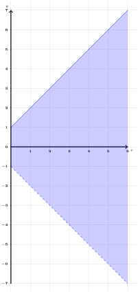
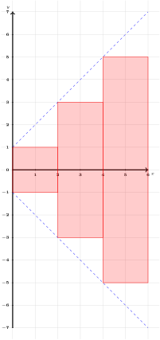
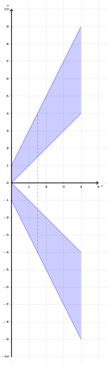
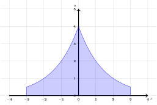
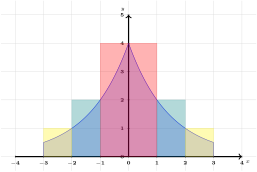

Consider the function \(f(x)=x+1\) and the solid of revolution generated by rotating the region in the first quadrant bounded by
\begin{equation*}
y=f(x) \text{ and } x=6
\end{equation*}
about the \(x\)-axis.

Figure125.Plot of \(f(x)=x+1\) over \([0,6]\text{.}\)
We wish to find the volume of this solid.
(a)
Suppose we estimate the volume of this solid by approximating it with two cylinders of “height” \(\Delta x=3\) with radii \(f(0)=1\) and \(f(3)=4\text{.}\)Figure126.Plot of \(f(x)=x+1\) over \([0,6]\) and the cross sections of two cylinders.
What is the volume of the cylinder with radius \(f(0)=1\text{?}\)
\(\displaystyle \pi\cdot 0^2\cdot 3\)
\(\displaystyle \pi\cdot 1^2\cdot 3\)
\(\displaystyle \pi\cdot 3^2\cdot 3\)
\(\displaystyle \pi\cdot 4^2\cdot 3\)
\(\displaystyle \pi\cdot 6^2\cdot 3\)
\(\displaystyle \pi\cdot 7^2\cdot 3\)
(b)
Figure127.Plot of \(f(x)=x+1\) over \([0,6]\) and the cross sections of two cylinders.
What is the volume of the cylinder with radius \(f(3)=4\text{?}\)
\(\displaystyle \pi\cdot 0^2\cdot 3\)
\(\displaystyle \pi\cdot 1^2\cdot 3\)
\(\displaystyle \pi\cdot 3^2\cdot 3\)
\(\displaystyle \pi\cdot 4^2\cdot 3\)
\(\displaystyle \pi\cdot 6^2\cdot 3\)
\(\displaystyle \pi\cdot 7^2\cdot 3\)
(c)
Suppose we now use a “height” of \(\Delta x=2\text{.}\)

Figure128.Plot of \(f(x)=x+1\) over \([0,6]\) and the cross sections of 3 cylinders.
If \(y = r(x)\) is a nonnegative continuous function on \([a,b]\text{,}\) then the volume of the solid of revolution generated by revolving the curve about the \(x\)-axis over this interval is given by
\begin{equation*}
V = \int_a^b \pi r(x)^2 \, dx\text{.}
\end{equation*}
Activity6.3.4.
Consider the solid of revolution generated by rotating the region bounded by
\begin{equation*}
x=0, x=4, y=0, y=x, \text{ and } y=2x+1
\end{equation*}
about the \(x\)-axis. Figure131.Plot of bounded region rotated about the \(x\)-axis.
(a)
What is the shape of the cross section made at \(x=x_i\text{?}\)

Figure132.Plot of Bounded region rotated about the \(x\)-axis.
A circle with radius \(r=x_i\text{.}\)
A circle with radius \(r=2x_i+1\text{.}\)
A circle with radius \(r=2x_i+1-x_i=x_i+1\text{.}\)
An annulus with outside radius \(R=2x_i+1\) and inner radius \(r=x_i\text{.}\)
(b)
Suppose we wanted to estimate this volume with 4 cylinders or annular cylinders with \(\Delta x=1\text{.}\) What is the volume of the (annular) cylinder formed at the cross section \(x_i=1\text{?}\)
Find the volume of the region bounded by \(f(x)=2x+1\) on \([0,4]\) rotated about the \(x\)-axis, and subtract the volume of the region bounded by \(g(x)=x\) on \([0,4]\) rotated about the \(x\)-axis.
Find the volume of the region bounded by \(f(x)=2x+1-x=x+1\) on \([0,4]\) rotated about the \(x\)-axis.
Fact6.3.5.The Washer Method.
If \(y = R(x)\) and \(y = r(x)\) are nonnegative continuous functions on \([a,b]\) that satisfy \(R(x) \ge r(x)\) for all \(x\) in \([a,b]\text{,}\) then the volume of the solid of revolution generated by revolving the region between them about the \(x\)-axis over this interval is given by
Suppose we wanted to find the volume of the the solid of revolution generated by rotating the region in the first quadrant bounded by the curves
\begin{equation*}
x=0, x=3, y=0, \text{ and } y=\frac{4}{2^x}
\end{equation*}
about the \(y\)-axis.

Figure133.Plot of Bounded region rotated about the \(y\)-axis.
(a)
Suppose we wanted to estimate this volume with 3 concentric annular cylinders with heights \(h_i=f(r_i)=\frac{4}{2^{r_i}}\text{,}\) where \(r_i\) are the inner radii and \(R_i\) are the outer radii. Over which values do the radii \(r_i\) and \(R_i\) range?
\(\displaystyle [-3,3]\)
\(\displaystyle [0,3]\)
\(\displaystyle [-4,4]\)
\(\displaystyle [0,4]\)
(b)
Recall that the volume of an annular cylinder of height \(h\text{,}\) inner radius \(r\) and outer radius \(R\) is \(V=\pi(R^2-r^2)h\text{.}\)

Figure134.Plot of Bounded region rotated about the \(y\)-axis.
Consider an arbitrary annular cylinder with inner radius \(r_i\text{,}\) outer radius \(r_i+\Delta r\text{,}\) and height \(\displaystyle h_i=\frac{4}{2^{r_i}}\text{.}\)Figure135.Plot of Bounded region rotated about the \(y\)-axis.
Which of the following represents the volume of this annular cylinder?
Recall that \(\pi ((r_i+\Delta r)^2-r_i^2)=\pi(2(\Delta r) r_i+(\Delta r)^2)=\pi(2 r_i+(\Delta r))\Delta r\text{.}\) Which of the following Riemann sums best estimates the volume of our solid?
Which of the following integrals computes the volume of our solid?
\(\displaystyle \displaystyle \int_{-3}^3 2\pi r \frac{4}{2^r} dr\)
\(\displaystyle \displaystyle \int_{0}^3 2\pi r \frac{4}{2^r} dr\)
\(\displaystyle \displaystyle \int_{0}^3 2\pi r \frac{4}{2^r} dr\)
(f)
What is the volume of our solid?
Fact6.3.7.The Shell Method.
Let a solid be formed by revolving a region \(R\text{,}\) bounded by \(x=a\) and \(x=b\text{,}\) around a vertical axis. Let \(r(x)\) represent the distance from the axis of rotation to \(x\) (i.e., the radius of a sample shell) and let \(h(x)\) represent the height of the solid at \(x\) (i.e., the height of the shell). The volume of the solid is
\begin{equation*}
V = 2\pi\int_a^b r(x)h(x)\ dx.
\end{equation*}
Activity6.3.8.
Consider the region bounded by
\begin{equation*}
x=0, y=2, x=4, \text{ and } y=\sqrt{x}.
\end{equation*}
(a)
Find the volume of the solid generated by rotating this region about the \(x\)-axis.
(b)
Find the volume of the solid generated by rotating this region about the \(y\)-axis.
Activity6.3.9.
Consider the region bounded by
\begin{equation*}
x=0, y=0, y=x+3, \text{ and } x=4.
\end{equation*}
Find the volume of the solid generated by rotating this region about the line \(x=10\text{.}\) (Hint: Sketch this figure, what is the outer radius \(R(x)\text{?}\) What is the inner radius \(r(x)\text{?}\))
Subsection6.3.2Videos
Figure136.Video: Compute volumes of solids of revolution, washer \(x\)-axisFigure137.Video: Compute volumes of solids of revolution, shell \(x\)-axisFigure138.Video: Compute volumes of solids of revolution, washer \(y\)-axisFigure139.Video: Compute volumes of solids of revolution, shell \(y\)-axis